Copilot Studio로 Microsoft 365 Copilot 확장하기
Copilot Studio에서 선언형 에이전트를 만들고 SharePoint 지식, 스타터 프롬프트, 프롬프트 작업, 커넥터 작업을 붙이는 실습 여섯 개를 한국어로 옮기고, 막히기 쉬운 지점에 설명을 덧붙였습니다. 원문에 실린 화면 이미지를 함께 포함했습니다.
이 문서는 Microsoft Learn 실습 랩 Extend Microsoft 365 Copilot in Copilot Studio를 한국어로 옮기고 설명을 덧붙인 자료입니다. 원문 랩은 영어로만 제공됩니다.
Copilot Studio와 Microsoft 365 Copilot은 기능과 화면이 빠르게 바뀝니다. 이 문서는 2026년 9월 기준이므로, 정확한 내용은 각 단원 머리의 원문 링크를 눌러 최신 상태로 확인해 주세요.
학습자가 입력하거나 붙여넣어야 하는 지침문, 프롬프트, 스키마 이름, URL은 원문 그대로 두었습니다. 영어 표기 그대로 사용하시면 됩니다.
화면 이미지와 원문 내용의 저작권은 Microsoft에 있습니다.
| 랩 | 제목 | 다루는 것 | 소요 |
|---|---|---|---|
| 00 | 환경 준비 | Power Platform 개발 환경과 Dataverse 만들기 | 10분 |
| 1.1 | 선언형 에이전트 만들기 | 에이전트 생성, 지침 정의, 테스트, Microsoft Copilot과 Teams에 게시 | 20분 |
| 1.2 | 사용자 지정 지식 추가 | SharePoint 문서 업로드, 지식 원본 연결, 지침 갱신 | 20분 |
| 1.3 | 스타터 프롬프트 추가 | 제안 프롬프트 6개 정의, 재게시, 확인 | 10분 |
| 2.1 | 프롬프트 작업 만들기 | 프롬프트 도구 작성, 테스트와 다듬기, 에이전트에 연결 | 15분 |
| 3.1 | 커넥터 작업 만들기 | SharePoint List Folder 커넥터 도구 구성과 테스트 | 15분 |
코스 구성
이 코스는 선언형 에이전트(declarative agent)를 만들고 확장하는 개발자와 메이커를 대상으로 합니다. Copilot Studio에서 Microsoft 365 Copilot을 바탕으로 하는 에이전트를 만들고, 여기에 지식 원본, 스타터 프롬프트, 프롬프트 작업, 커넥터 작업을 차례로 붙여 갑니다. 랩 1.1부터 3.1까지는 앞 실습에서 만든 Product Support 에이전트를 계속 이어서 확장합니다.
사전 조건
- Copilot Studio에서 만들 권한이 있는 회사 또는 학교 계정
- 에이전트를 만들 수 있는 Power Platform 개발자 환경(랩 00에서 준비)
- Microsoft 365 Copilot 라이선스와 SharePoint, Microsoft Teams 접근 권한
- 준비된 환경이 없다면 랩 00을 먼저 마치세요
Copilot Studio가 New experience로 열릴 수 있습니다. 이 랩들은 클래식(현재) 인터페이스를 기준으로 작성됐습니다. 오른쪽 위 New experience 토글을 꺼서 클래식 환경으로 돌아간 뒤 진행하세요.
선언형 에이전트는 Microsoft 365 Copilot의 기반 모델을 그대로 쓰면서 지침, 지식, 스타터 프롬프트, 작업(도구) 네 가지로 동작을 정의합니다. 각 실습은 이 네 가지 중 하나를 붙이며 에이전트를 점점 확장합니다.
랩 00 · Power Platform 환경 만들기 10분
랩을 시작하기 전에 작업할 개발 환경을 만듭니다.
Power Platform 관리 센터 열기
- 브라우저를 열고
https://admin.powerplatform.microsoft.com/manage/environments로 이동해 이 실습용 자격 증명으로 로그인합니다. - 로그인 상태를 유지할지 물으면 유지를 선택합니다.
- 표시되는 팝업 메시지를 닫습니다.
기본 환경에 Dataverse 추가
- Contoso (default) 환경의 줄임표(...)를 선택하고 Add Dataverse를 선택합니다.
- 기본 설정을 그대로 두고 Add를 선택합니다.
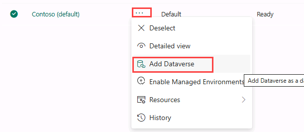
새 환경 만들기
- Environments 페이지에서 + New를 선택하고 다음처럼 설정합니다.
- Type · Developer
- Macro Region Geography · North America
- Name · 본인 이름
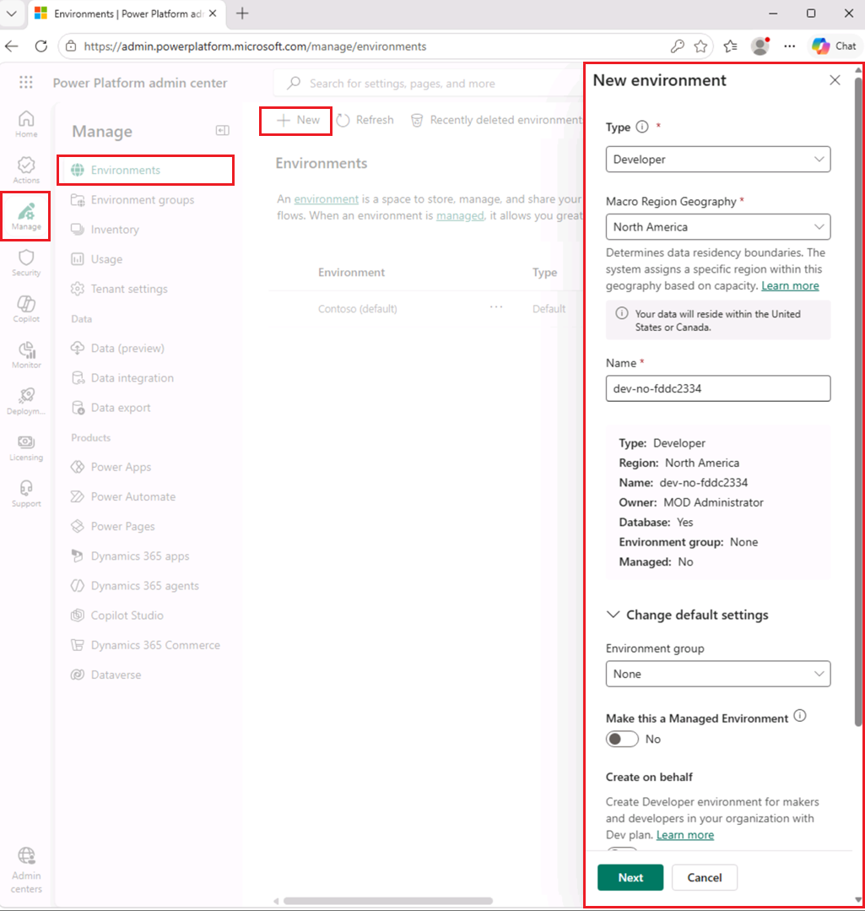
- Change default settings를 펼치고 다음처럼 설정합니다.
- Environment group · None
- Make this a Managed Environment · No
- Get new features early · No
- Create on behalf · No
- Add a Dataverse data store? · Yes
- Next를 선택하고 Add Dataverse 섹션에서 다음처럼 설정합니다.
- Language · English (United States)
- Currency · USD ($)
- Deploy sample apps and data · No
- Save를 선택하고 환경 상태가 Ready가 될 때까지 기다립니다. Refresh 버튼으로 화면을 갱신할 수 있습니다.
환경을 프로비저닝하는 데 테넌트 구성에 따라 몇 분이 걸릴 수 있습니다.
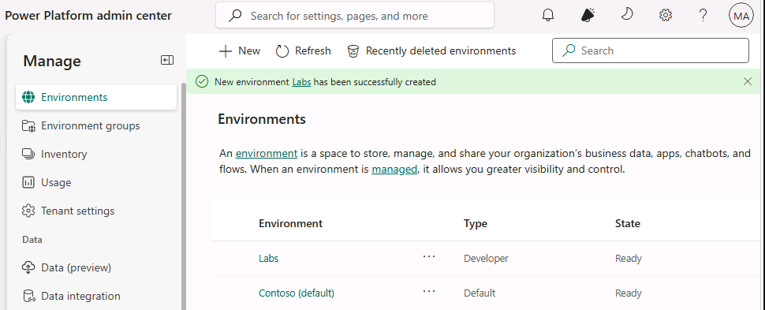
Copilot Studio에서 환경 선택
- 새 브라우저 탭에서
https://copilotstudio.microsoft.com/로 이동하고 필요하면 로그인합니다. - Copilot Studio가 새 환경으로 열리면 오른쪽 위의 New experience 토글을 찾아 꺼서 클래식 환경으로 돌아갑니다. Submit feedback to Microsoft 대화 상자가 나오면 Submit > Done을 선택해 닫습니다. 이미 클래식으로 열렸다면 이 단계는 건너뜁니다.
- 메시지가 나오면 Get Started를 선택하고 국가 또는 지역 기본값을 그대로 둡니다.
- 표시되는 환영 메시지를 모두 건너뜁니다.
- 오른쪽 위에서 Environment Selector로 환경을 전환하고 방금 만든 환경을 선택합니다.
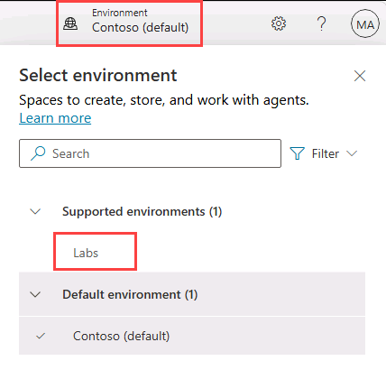
먼저 관리 센터에서 환경 ID(GUID)를 확인합니다. https://admin.powerplatform.microsoft.com/manage/environments에서 만든 환경을 열고, URL에 있는 12345678-90ab-cdef-1234-567890abcdef 형식의 긴 문자열을 복사합니다. 그런 다음 https://copilotstudio.microsoft.com/environments/<your-environment-id>/home에 ID를 붙여 넣어 환경에 직접 접근해 봅니다.
이제 작업할 Power Platform 환경이 준비됐습니다.
랩 1.1 · 선언형 에이전트 만들기 20분
생성형 AI로 선언형 에이전트를 만들고 지침을 다듬은 뒤 Microsoft 365와 Microsoft Teams에 게시하고, Microsoft Copilot에서 동작을 테스트합니다.
에이전트 만들기
- 브라우저에서 Microsoft Copilot Studio(
https://copilotstudio.microsoft.com)로 이동합니다. - 로그인돼 있지 않으면 Copilot Studio에서 만들 권한이 있는 회사 또는 학교 계정으로 로그인합니다.
- 로그인 상태를 유지할지 물으면 Yes를 선택합니다.
- Copilot Studio가 새 환경으로 열리면 오른쪽 위 New experience 토글을 꺼서 클래식 환경으로 돌아갑니다. Submit feedback to Microsoft 대화 상자가 나오면 Submit > Done을 선택합니다. 이미 클래식이면 건너뜁니다.
- Welcome to Microsoft Copilot Studio 페이지가 나오면 국가/지역을 선택하고 Get Started를 선택합니다.
- 표시되는 환영 메시지를 모두 건너뜁니다.
- Copilot Studio에 들어가면 새 에이전트를 만드는 홈 화면에서 시작할 가능성이 높습니다.
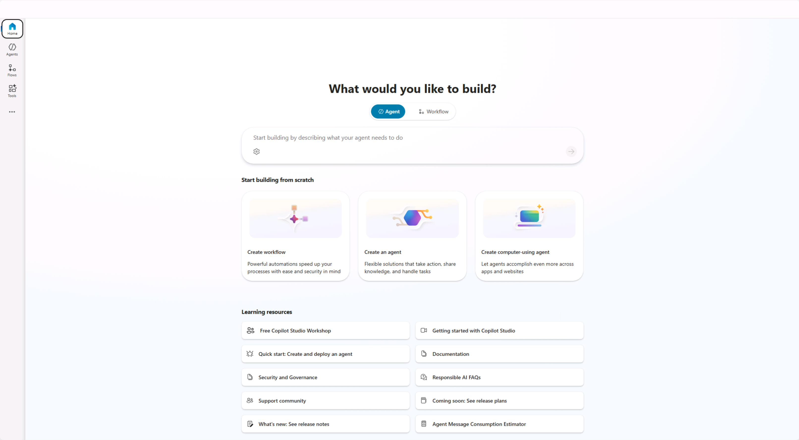
- 오른쪽 위에서 Environment Selector가 이 랩용으로 만든 환경을 가리키는지 확인합니다. 기본 환경이 보이면 Environment Selector를 선택한 뒤 만든 환경을 선택합니다.
- 왼쪽 탐색 창에서 Agents를 선택합니다.
- 에이전트 페이지에서 Microsoft 365 Copilot을 선택합니다.
- Microsoft 365 Copilot 에이전트 페이지의 Agents 섹션에서 + Add를 선택합니다.
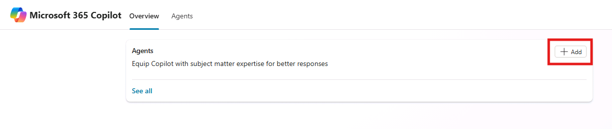
에이전트 생성 페이지로 이동하며, 여기서 만들 에이전트의 세부 정보를 정의할 수 있습니다.
에이전트 구성과 지침 정의
일관된 결과를 얻기 위해 에이전트의 속성과 메타데이터를 직접 입력합니다.
- Name 필드에
Product support를 입력합니다. - Description 필드에 다음을 입력합니다.
- Instructions 텍스트 상자에 다음을 입력합니다.
- 제안 프롬프트는 생성형 AI로 만들어집니다. Suggested prompts 섹션은 지금은 비워 둡니다. 이 프롬프트는 다음 실습에서 갱신합니다.
- 페이지 위쪽의 Create를 선택해 에이전트를 만듭니다. 잠시 뒤 에이전트 개요 페이지로 이동합니다.
Copilot Studio에서 에이전트 테스트
Microsoft Copilot에 게시하기 전에 Copilot Studio의 테스트 창에서 에이전트 동작을 확인합니다.
- Product Support 에이전트 개요 페이지의 Publish details 섹션에서 에이전트가 아직 게시되지 않았음을 확인합니다.
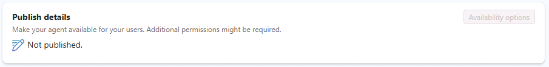
- 에이전트 개요 오른쪽에 Test your agent 창이 보이지 않으면 Publish 버튼 옆의 Test 버튼을 선택해 테스트 창을 엽니다.
- 테스트 창의 프롬프트 상자에
What can you do?를 입력하고 메시지를 보냅니다. - 응답을 기다립니다. 앞에서 정의한 지침대로 응답이 "Thanks for using a Copilot agent!"로 시작하는 것을 확인합니다.
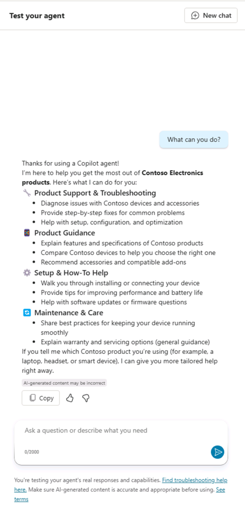
현재 에이전트에는 지침만 있고 사용자 지정 지식 원본이나 작업은 아직 없습니다. Contoso 제품 질문에 정확히 답하도록은 아직 구성하지 않았으며, 이는 다음 실습에서 진행합니다.
에이전트를 수정하려면 개요 페이지 Details 섹션에서 edit를 선택해 변경한 뒤 저장합니다. 다시 테스트하기 전에 테스트 창의 New Chat 버튼을 선택합니다.
Microsoft Copilot과 Microsoft Teams에 게시
Product Support 에이전트 개요 페이지에서 진행합니다.
- Publish 버튼을 선택합니다. Microsoft Copilot과 Microsoft Teams에서 사용자에게 표시할 에이전트 정보를 입력하라는 메시지가 나옵니다.
이 양식의 정보는 조직의 Office 및 Teams 카탈로그 항목과 Microsoft 관리 센터의 통합 앱 목록을 채우는 데 쓰입니다. Microsoft Copilot 언어 모델이 에이전트를 호출할 때 쓰는 값은 아닙니다.
- Short description 텍스트 상자에 자동 생성된 내용을 지우고 다음을 입력합니다.
- 나머지 필드는 기본 제안값을 그대로 둡니다.
- Publish를 선택합니다.
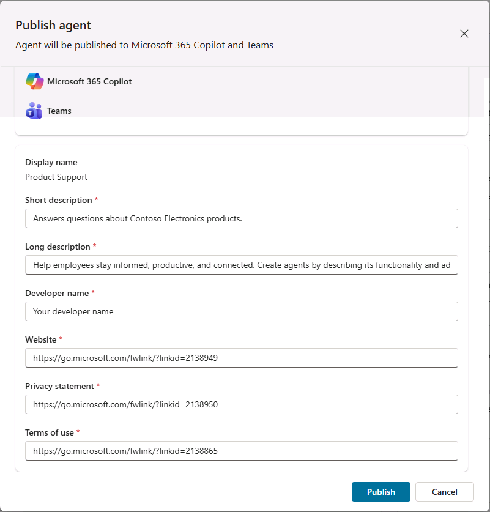
- 에이전트가 게시될 때까지 기다립니다. 게시 중에는 모달 창을 닫지 않습니다. 몇 분이 걸릴 수 있습니다.
Publish를 선택하면 에이전트에 대응하는 봇 리소스가 테넌트의 Microsoft Entra ID 환경에 프로비저닝됩니다. 이 리소스로 사용자가 Microsoft Teams에서 에이전트와 상호작용할 수 있습니다.
- 게시가 끝나면 Availability options 창이 나타납니다.
- Share link 아래에서 Copy를 선택해 공유 링크를 복사한 뒤 Done을 선택합니다.
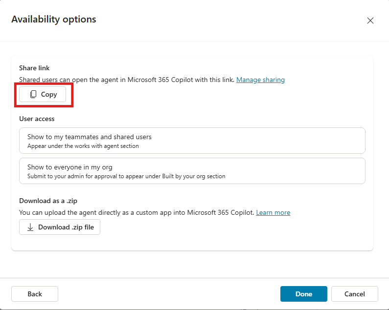
- 에이전트 개요 페이지의 Publish details 섹션에 게시됐다는 상태가 반영됐는지 확인합니다.
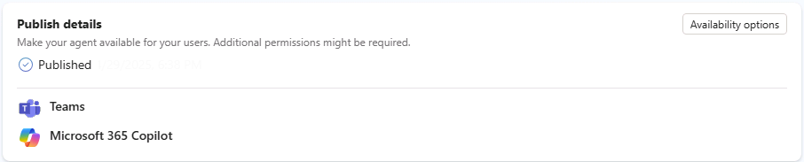
공유 링크를 다시 복사하려면 Publish details 섹션에서 Availability options를 선택합니다.
- 새 탭을 열고 공유 링크를 주소 표시줄에 붙여 넣은 뒤 Enter를 누릅니다. Microsoft Teams를 열지 물으면 Cancel을 선택한 뒤 Use the web app instead를 선택합니다. 에이전트 개요와 필요한 권한을 보여 주는 모달 창이 나타납니다.
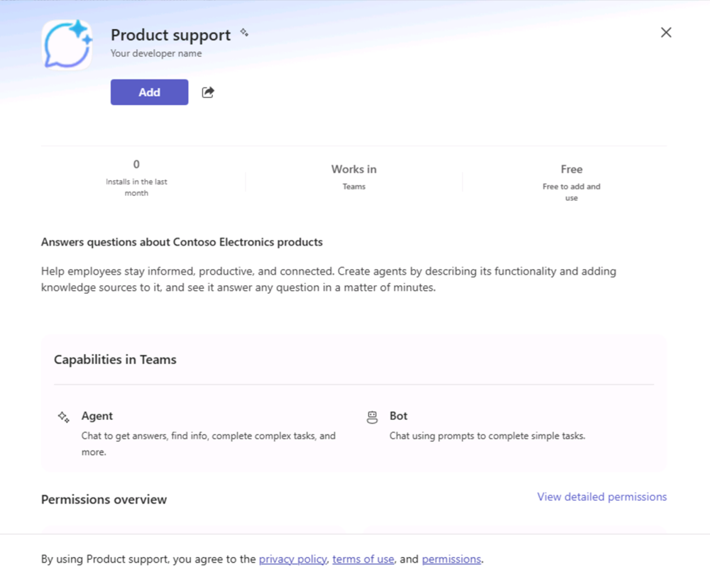
- Add를 선택해 에이전트를 Microsoft Teams에 추가합니다.
- 에이전트가 추가될 때까지 기다립니다. 에이전트가 먼저 Microsoft Teams에서 실행됩니다.
Microsoft Copilot에서 에이전트 테스트
Microsoft Copilot에서 몰입형(immersive)과 인컨텍스트(in-context) 두 방식으로 에이전트를 확인합니다. 앞 단계까지 진행하면 현재 몰입형 경험에 있으며, 채팅 옆 Agents 섹션에서 Product Support가 직접 대화 중인 에이전트로 선택돼 있습니다.
- Microsoft Teams의 App launcher(격자 아이콘)를 선택하거나 Microsoft Copilot(
https://m365.cloud.microsoft.com)을 열어 이동합니다. - 왼쪽 탐색 창의 Agents 섹션에서 Product Support 에이전트를 선택합니다.
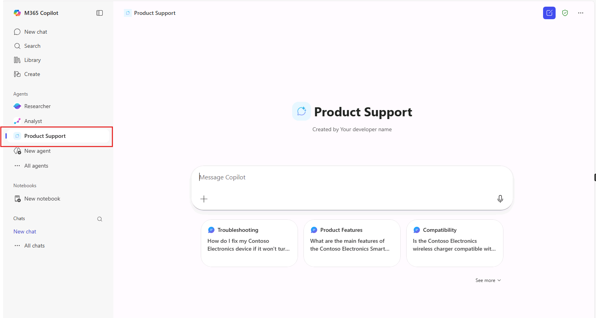
Product Support 에이전트가 Agents 섹션에 보이지 않으면 More agents를 선택합니다. Your agents 아래에서 Product Support를 고정한 뒤 목록에서 선택합니다.
- 프롬프트 상자에
What can you do?를 입력하고 메시지를 보냅니다. - 응답을 기다립니다. 지침대로 응답이 "Thanks for using a Copilot agent!"로 시작하는지 확인합니다.
이어서 브라우저에서 인컨텍스트 경험을 테스트합니다.
- 사이드바의 Agents 섹션 위에서 New chat를 선택해 Microsoft Copilot과 새 대화를 시작하고, Product Support 에이전트와의 몰입형 대화에서 빠져나옵니다.
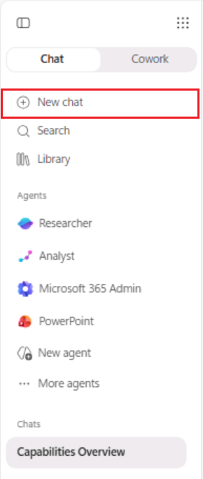
- 프롬프트 상자에
@기호를 입력합니다. 사용할 수 있는 에이전트 목록이 플라이아웃으로 나타납니다.
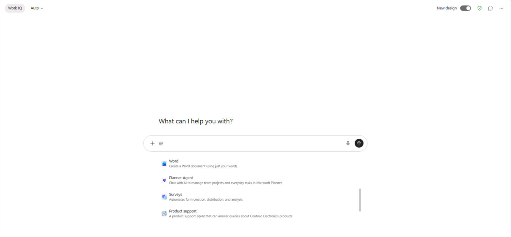
- 플라이아웃에서 Product Support를 선택합니다. 이제 Copilot과의 대화 안에서 인컨텍스트로 에이전트와 대화하며, 에이전트가 Copilot 대화의 맥락을 참고할 수 있습니다.
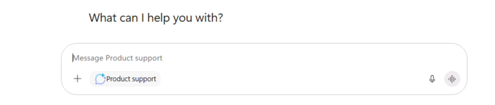
- 프롬프트 상자에
What can you do?를 입력하고 메시지를 보냅니다. - 응답을 기다립니다. 지침대로 응답이 "Thanks for using a Copilot agent!"로 시작하는지 확인합니다.
- 인컨텍스트 경험에서 나가려면 상태 메시지의 (X)를 선택합니다. 상태 메시지가 사라지고 더 이상 Product Support 에이전트와 대화하지 않는다는 안내가 표시되며, Copilot과 직접 대화를 이어 갈 수 있습니다.
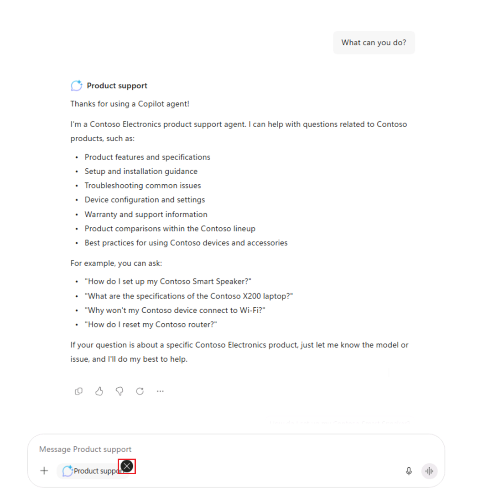
이제 Microsoft 365 Copilot에서 몰입형과 인컨텍스트 두 방식으로 에이전트를 모두 테스트했습니다.
랩 1.2 · 사용자 지정 지식 추가 20분
앞 실습에서 만든 선언형 에이전트에 사용자 지정 지침과 그라운딩 데이터를 더합니다.
시작하기 전에
먼저 에이전트가 그라운딩 데이터로 쓸 제품 문서를 Microsoft 365에 업로드합니다.
새 SharePoint Online 사이트에 문서를 업로드하면 색인이 만들어져 Copilot이 쓸 수 있게 되기까지 지연이 있습니다. 바로 테스트하려면 기존 사이트에 문서를 업로드하세요. 새 사이트를 쓰면 색인에 더 오래 걸릴 수 있습니다. 아래 절차는 새 사이트를 만드는 방식이며, 기존 사이트를 쓰려면 Upload sample data 섹션부터 시작하고 Products 라이브러리 대신 기존 라이브러리를 씁니다.
샘플 데이터 다운로드
- 브라우저에서 코스의 GitHub 저장소(
https://github.com/MicrosoftLearning/MS-4022-Extend-Microsoft-365-Copilot-in-Copilot-Studio/blob/master/Allfiles/Products.zip)로 이동합니다. - Download raw file 버튼을 선택해 Products.zip을 내려받습니다.
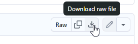
- 내려받은 폴더를 Open하고 Extract all을 선택해, 나중에 접근할 수 있는
Products라는 새 폴더로 내용을 풉니다.
SharePoint 사이트 만들기
- 브라우저에서 Microsoft Copilot(
https://m365.cloud.microsoft.com)으로 이동해 이 랩에서 쓰는 Microsoft 365 계정으로 로그인합니다. - 왼쪽 위의 App Launcher 아이콘(격자 아이콘)을 선택한 뒤 More Apps를 선택합니다.
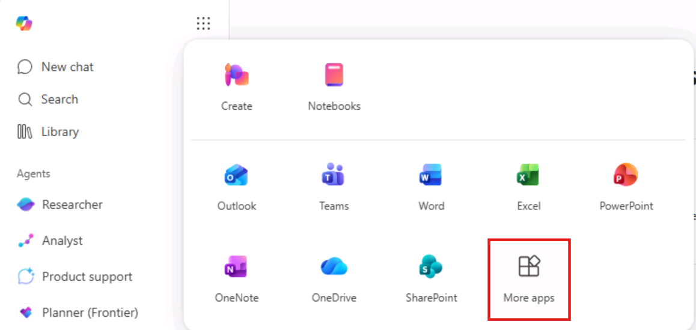
- 앱 카탈로그에서 SharePoint를 선택합니다.
- 새 기능 안내 메시지를 건너뛰고 SharePoint 홈페이지로 이동합니다.
- 왼쪽 탐색 메뉴에서 Build를 선택합니다.
- Start building 섹션에서 Site를 선택합니다.
- 사이트 유형으로 Team site를 선택합니다.
- Select a site template 페이지의 From Microsoft 섹션에서 Standard team을 선택합니다.
- Preview site template 페이지에서 Use template을 선택합니다.
- Give your site a name 페이지에서
Product support를 입력합니다.
The site address is available with modification 메시지가 나오면 사이트 주소를 쓸 수 있다고 나올 때까지 이름을 수정합니다. 제안된 수정안을 받아들이거나 직접 만들어도 됩니다.
- Privacy settings를 Public - anyone in the organization can access this site로 바꿉니다.
- Create site를 선택합니다. 사이트가 만들어지고 Go to site 버튼이 활성화되기까지 잠시 걸릴 수 있습니다.
- Go to site를 선택하면 새 SharePoint 사이트로 이동합니다.
문서 라이브러리 만들기
- Product support SharePoint 사이트에서 페이지 위쪽의 + New를 선택한 뒤 Document library를 선택합니다.
- Create a new document library 페이지의 Start from scratch or reuse에서 Blank library를 선택합니다.
- Name 필드에
Products를 입력한 뒤 Create를 선택하면 새 문서 라이브러리로 이동합니다.
샘플 데이터 업로드
- Products 라이브러리에서 + Create or upload 버튼을 선택한 뒤 Files upload를 선택합니다.
- 앞에서 샘플 파일을 저장한 컴퓨터 폴더로 이동합니다.
- 로컬 Products 폴더의 파일을 Select all한 뒤 Open을 선택해 SharePoint로 업로드합니다.
- 업로드가 끝날 때까지 기다립니다. 파일이 SharePoint의 Products 라이브러리에 나타납니다.
SharePoint URL 복사
에이전트 지식을 구성할 때 쓰도록 사이트의 직접 URL을 복사합니다.
- SharePoint의 Products 라이브러리 페이지에서 오른쪽 위 Settings 아이콘을 선택하고 Library settings > More library settings를 선택합니다.
- Web address 속성을 찾습니다. SharePoint 사이트 URL은 Web address 중
https://DOMAIN.sharepoint.com/sites/SITE_NAME/LIBRARY_NAME/Forms/AllItems.aspx형식의 부분입니다. 여기서는https://DOMAIN.sharepoint.com/sites/ProductSupport/Products/Forms/AllItems.aspx형식이며, DOMAIN은 Microsoft 365 테넌트 도메인입니다. - SharePoint 사이트 URL을 Copy해 이후 단계에서 쓰도록 저장합니다. "/Products" 뒤에 오는 부분은 포함하지 않습니다.
에이전트에 사용자 지정 지식 구성
SharePoint URL 추가
- 브라우저에서 Microsoft Copilot Studio(
https://copilotstudio.microsoft.com)로 이동합니다. - 새 기능 안내 메시지를 건너뜁니다.
- Agents를 선택합니다.
- Microsoft 365 Copilot 에이전트를 선택합니다.
- Product Support 에이전트를 선택합니다.
- 에이전트 개요 페이지의 Knowledge 섹션에서 Add Knowledge를 선택합니다.
- 마법사의 Add knowledge 페이지에서 SharePoint를 선택합니다.
- 텍스트 상자에 Products SharePoint 라이브러리 URL을 붙여 넣은 뒤 Add를 선택합니다. 형식은
https://DOMAIN.sharepoint.com/sites/ProductSupport/Products여야 합니다. - Add to agent를 선택하고 지식 원본이 에이전트에 추가될 때까지 기다립니다. 1분 정도 걸릴 수 있습니다.
- 에이전트 개요의 Knowledge 섹션에 Products 라이브러리가 나열됐는지 확인합니다.
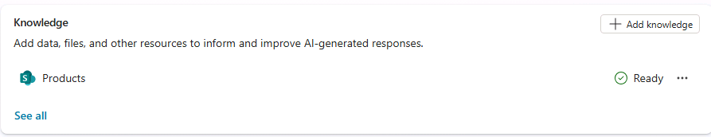
Copilot Studio 에이전트는 사용자를 대신해 문서에 접근합니다. 에이전트는 최종 사용자가 접근할 수 있는 문서에서만 답변과 콘텐츠를 얻을 수 있습니다.
사용자 지정 지침 갱신
에이전트가 지식 원본을 어떻게 써야 하는지 지침을 갱신합니다.
- Copilot Studio의 에이전트 개요 페이지에서 Details 섹션의 Edit를 선택합니다.
- Instructions 텍스트 상자 내용을 다음으로 바꿉니다.
- Details 섹션에서 Save를 선택합니다.
Copilot Studio에서 에이전트 테스트
에이전트가 사용자 지정 지식 원본을 쓸 수 있는지 확인합니다.
- 에이전트 개요 페이지의 Test your agent 창에서 New chat 버튼을 선택해 테스트 창을 새로 고칩니다.
- 테스트 대화 텍스트 상자에
Tell me about Eagle Air를 입력하고 메시지를 보냅니다. - 응답을 기다립니다. 응답에 Eagle Air 드론 정보가 담기며, SharePoint에 저장된 Eagle Air 문서에 대한 인용과 참조가 포함됩니다.
프롬프트를 몇 개 더 시도해 봅니다.
- 메시지 상자에
Recommend a product suitable for a farmer를 입력하고 보냅니다. - 응답을 기다립니다. Eagle Air 정보와 함께 왜 Eagle Air를 추천하는지 맥락이 담기며, Eagle Air 문서에 대한 인용과 참조가 포함됩니다.
- 메시지 상자에
Explain why the Eagle Air is more suitable than Contoso Quad를 입력하고 보냅니다. - 응답을 기다립니다. 농부에게는 Eagle Air가 Contoso Quad보다 왜 더 적합한지 더 자세히 설명합니다.
마지막으로 에이전트가 답할 수 없는 질문으로 대체(fallback) 응답을 테스트합니다.
- 메시지 상자에
When was Mark8 released?를 입력하고 보냅니다. - 응답을 기다립니다. 지침에 정의한 대로 담당 팀에 문의하라고 제안하는지 확인합니다.
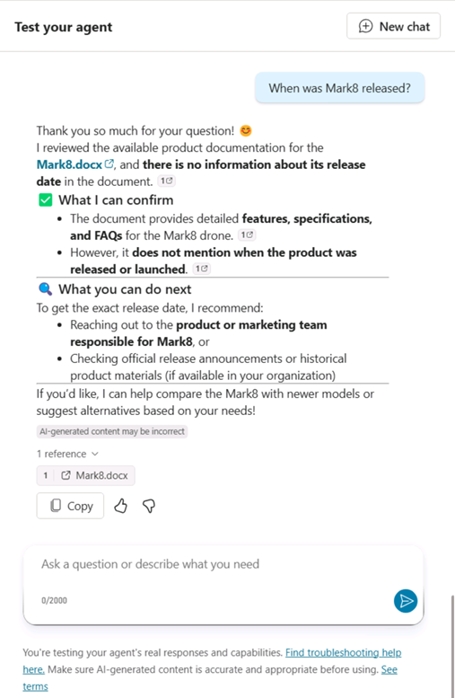
랩 1.3 · 스타터 프롬프트 추가 10분
앞 실습에서 만든 선언형 에이전트에 적절한 제안 프롬프트 여섯 개를 더합니다.
제안 프롬프트 정의
Copilot Studio에서 진행합니다.
- Product Support 에이전트의 Overview 페이지로 이동합니다.
- 대화형 에이전트 생성 마법사가 만드는 동안 제안 프롬프트를 자동으로 만들었을 수 있습니다. 있다면 에이전트 기능에 더 맞는 프롬프트로 바꿉니다.
- Suggested Prompts 섹션에서, 생성 여부에 따라 Edit 아이콘 또는 Add suggested prompts 버튼을 선택합니다.
- 기존 프롬프트를 다음으로 바꿉니다. 왼쪽은 표시 이름, 오른쪽은 프롬프트 내용입니다.
- Save를 선택해 변경 내용을 저장합니다.
에이전트 재게시
- 변경 내용이 저장되면 Copilot Studio의 에이전트 개요 페이지 오른쪽 위에서 Publish를 선택합니다.
- 열린 모달 창에서 Publish를 선택합니다.
- Availability options 창에서 Share link 아래의 Copy를 선택합니다.
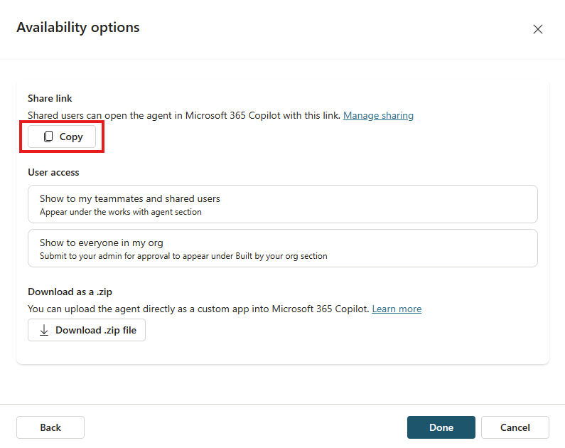
- 다른 탭에서 에이전트 공유 링크를 붙여 넣고 Enter를 누릅니다. Product Support 에이전트를 설명하는 창이 나타납니다.
- 변경 내용이 Product Support 에이전트에 게시되는 동안 잠시 기다립니다.
새로 게시한 제안 프롬프트가 Microsoft Copilot에 나타나기까지 몇 분이 걸릴 수 있습니다. 바로 보이지 않으면 몇 분 기다린 뒤 New chat를 선택하고 Product Support를 다시 선택합니다. 프롬프트는 새로 시작한 빈 세션에 표시됩니다.
- 업데이트가 끝나면 Copilot Studio로 돌아가 모달 창을 닫습니다. 브라우저가 Microsoft Copilot으로 이동하지 않으면 왼쪽 위 App Launcher 아이콘(격자 아이콘)으로 Microsoft Copilot을 엽니다.
Microsoft Copilot에서 에이전트 테스트
- Microsoft Copilot 사이드 패널의 에이전트 목록에서 Product Support를 찾아 선택해 몰입형 경험으로 들어가 직접 대화합니다. Copilot Studio에서 정의한 제안 프롬프트가 화면에 표시되는지 확인합니다.
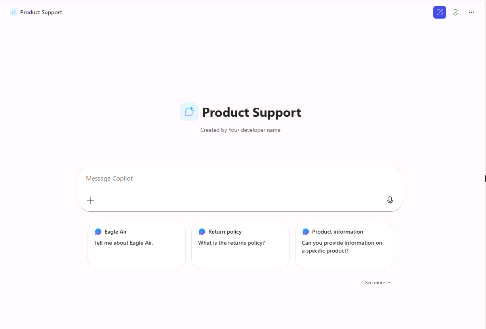
- 제안 프롬프트 하나를 선택해 메시지를 보내고 응답을 확인합니다.
랩 2.1 · 프롬프트 작업 만들기 15분
프롬프트 작업을 만들고 Copilot Studio와 Copilot 에이전트 안에서 테스트합니다. 사용자의 초안 아이디어를 정해진 형식과 지침을 따르는 마케팅 피치로 정리하는 프롬프트 작업을 만듭니다.
Copilot Studio에서 사용자 지정 프롬프트 만들기
- 브라우저에서 Copilot Studio(
https://copilotstudio.microsoft.com)로 이동합니다. - Copilot Studio가 새 환경으로 열리면 오른쪽 위 New experience 토글을 꺼서 클래식 환경으로 돌아갑니다. Submit feedback to Microsoft 대화 상자가 나오면 Submit > Done을 선택합니다. 이미 클래식이면 건너뜁니다.
- 오른쪽 위에서 Environment Selector가 이 랩용 환경을 가리키는지 확인합니다. 기본 환경이면 Environment Selector를 선택한 뒤 만든 환경을 선택합니다.
- 왼쪽 탐색에서 Tools를 선택합니다.
- + New tool을 선택합니다.
- New tool 대화 상자에서 Prompt를 선택합니다. 프롬프트 빌더 UI로 이동합니다. 이 창에서도 Copilot을 쓸 수 있지만 여기서는 프롬프트를 직접 정의합니다.
- 창 위쪽 텍스트 상자에서 자동 생성된 이름을 선택하고
Marketing Pitch Prompt로 바꿉니다. - Instructions 텍스트 상자에 다음을 입력합니다.
이 문장은 끝에 공백이 있고 뒤에 입력 변수를 이어 붙입니다. 문장을 그대로 두고 다음 단계에서 커서를 문장 끝에 두어 콘텐츠를 삽입하세요.
- 입력한 문장 끝에 커서를 두고 Add content를 선택합니다.
- Text를 선택합니다.
- Name 필드에
Draft를 입력합니다. - Sample data 필드에 다음을 입력한 뒤 Close를 선택합니다.
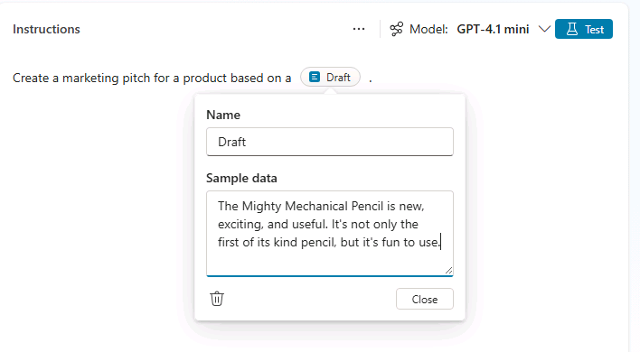
프롬프트 테스트와 다듬기
- 지침 상자 위의 Test를 선택해 입력한 샘플 데이터로 프롬프트를 테스트합니다.
- Model response 섹션에서 테스트 실행 결과를 확인합니다.
더 구조적이고 일관된 출력을 내도록 프롬프트를 다듬습니다.
- Instructions 텍스트 상자의 기존 지침에 다음을 덧붙입니다.
- Test를 다시 선택해 프롬프트를 재테스트합니다.
- 응답이 어떻게 달라지는지 확인합니다.
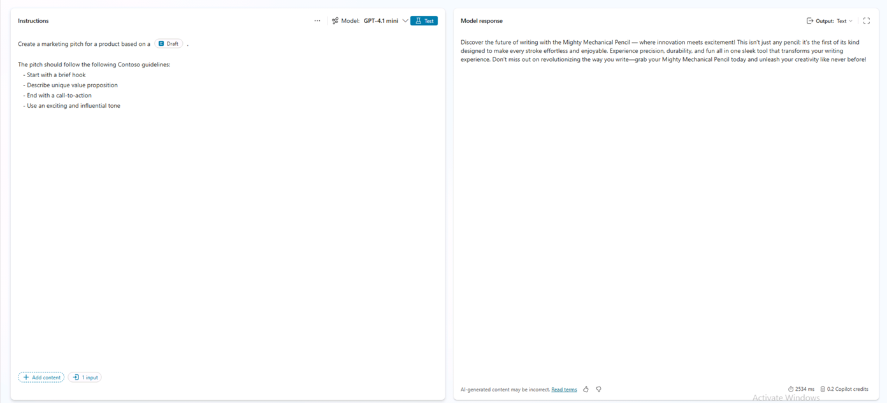
- Save를 선택해 프롬프트를 저장합니다.
(선택) 에이전트에 프롬프트 작업 추가
앞 랩에서 선언형 에이전트를 만들었다면 이 작업을 에이전트에 추가하고 지침에서 작업을 참조하도록 갱신할 수 있습니다.
프롬프트 도구 추가
- Copilot Studio 사이드바에서 Agents를 선택합니다.
- Microsoft 365 Copilot을 선택합니다.
- Agents 아래에서 작업을 추가할 Product Support 에이전트를 선택합니다.
- 페이지의 Tools 섹션에서 Add tool을 선택합니다.
- Prompt 필터를 선택합니다.
- Marketing Pitch Prompt 도구를 선택합니다.
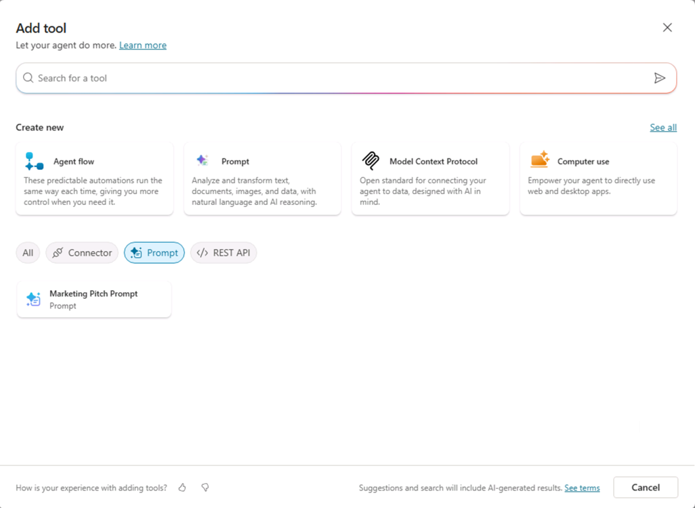
- Add and configure를 선택하고 도구가 추가될 때까지 기다립니다. 도구가 Product Support 에이전트의 Tools에 나열됩니다.
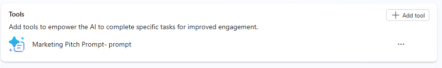
에이전트 지침과 스타터 프롬프트 갱신
- Details 섹션에서 Edit를 선택합니다.
- Instructions 텍스트 상자의 기존 지침에 다음을 덧붙입니다.
- Save를 선택해 변경 내용을 저장합니다.
- Suggested prompts 섹션에서 Eagle Air 제안 프롬프트를 다음으로 바꾼 뒤 Save합니다. 왼쪽은 표시 이름, 오른쪽은 프롬프트 내용입니다.
이로써 에이전트에 프롬프트 도구를 만드는 실습을 마쳤습니다.
랩 3.1 · 커넥터 작업 만들기 15분
Copilot Studio에서 선언형 에이전트에 커넥터 도구를 구성합니다. SharePoint - List folder 커넥터로 제품 지원 파일이 담긴 Products 폴더의 파일 목록을 가져옵니다.
시작하기 전에
이 실습은 기존 에이전트에 커넥터 도구를 더합니다. 다음을 전제로 합니다.
- Copilot Studio에 Product Support 선언형 에이전트를 이미 만들어 두었습니다. 만드는 방법은 랩 1.1 선언형 에이전트 만들기를 참고하세요.
- 제품 관련 샘플 데이터 파일이 담긴 Products 문서 라이브러리가 있는 Product Support SharePoint 사이트가 있습니다. 만드는 방법은 랩 1.2의 시작하기 전에 절을 참고하세요.
미리 만들어진 커넥터로 SharePoint 커넥터 도구 만들기
- 브라우저에서 Copilot Studio(
https://www.copilotstudio.microsoft.com)로 이동합니다. - Copilot Studio가 새 환경으로 열리면 오른쪽 위 New experience 토글을 꺼서 클래식 환경으로 돌아갑니다. Submit feedback to Microsoft 대화 상자가 나오면 Submit > Done을 선택합니다. 이미 클래식이면 건너뜁니다.
- 오른쪽 위에서 Environment Selector가 이 랩용 환경을 가리키는지 확인합니다. 기본 환경이면 Environment Selector를 선택한 뒤 만든 환경을 선택합니다.
- 사이드바에서 Agents를 선택합니다.
- Microsoft 365 Copilot을 선택합니다.
- Agents 아래에서 Product Support 에이전트를 선택합니다.
- Tools 아래에서 + Add tool을 선택합니다.
- Add tool 대화 상자에서 Connector 버튼을 선택해 커넥터 도구로 필터링하고, Search 상자에
SharePoint를 입력한 뒤 Search를 선택하거나 Enter를 누릅니다. 관련 커넥터가 표시될 때까지 기다립니다. - 목록에서 List Folder SharePoint 커넥터를 선택합니다.
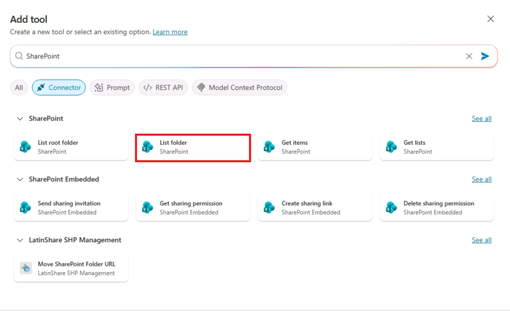
- 모달 창에 SharePoint 커넥터의 연결이 표시됩니다. 연결이 활성 상태이면 커넥터 옆에 녹색 체크가 나타납니다. ...를 선택해 연결 세부 정보를 볼 수 있습니다. 상태가 Not connected이면 Not connected 옆 드롭다운을 선택하고 Create new connection을 선택합니다.
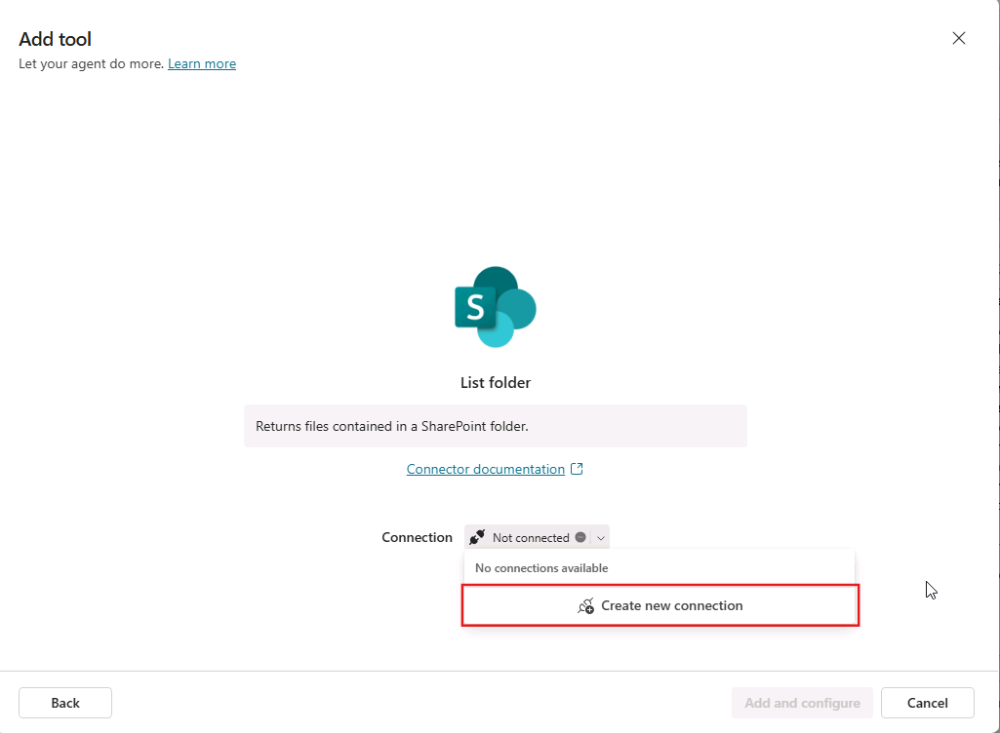
- Connect to SharePoint 대화 상자에서 Connect directly (cloud services)를 선택한 뒤 Create를 선택합니다.
- 로그인하라는 메시지가 나오면 이 실습에서 쓰는 M365 계정으로 로그인합니다.
- Add tool 대화 상자에서 연결이 만들어지면 Add and configure를 선택해 도구를 에이전트에 추가합니다.
- 에이전트의 Tools 섹션에 List folder - connector 도구가 나열됐는지 확인합니다.
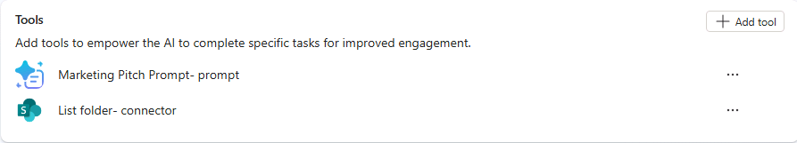
에이전트에 맞게 커넥터 도구 구성
- Product Support 에이전트 페이지의 Tools에서 앞에서 추가한 List folder - connector 도구를 선택합니다.
- Name 텍스트 상자에
List product support files를 입력합니다. - Description 텍스트 상자에 다음을 입력합니다.
- Additional details 옆 토글을 선택해 추가 속성을 표시합니다.
- Additional details 섹션의 Description 텍스트 상자에 다음을 입력합니다.
- Inputs 섹션에서 Site Address 입력을 찾습니다.
- Value 텍스트 상자에서 드롭다운으로 Product Support SharePoint 사이트를 선택하거나, Enter custom value를 선택하고 URL을
https://DOMAIN.sharepoint.com/sites/ProductSupport형식으로 입력합니다. - 다음으로 File Identifier 입력을 찾습니다. Fill using 필드를 Custom으로 설정합니다.
- File Identifier의 Value 텍스트 상자에
Products를 입력합니다. - 페이지 위쪽의 Save를 선택해 변경 내용을 저장합니다.
에이전트 지침 수정
커넥터 도구를 어떻게 써야 하는지 에이전트 지침에 안내를 더합니다.
- Product Support 에이전트 개요 페이지로 돌아갑니다.
- Details 섹션에서 Edit를 선택합니다.
- Instructions 텍스트 상자의 기존 지침에 다음을 덧붙입니다.
- Save를 선택합니다.
도구와 함께 에이전트 테스트
- 에이전트 세부 정보 페이지 오른쪽의 Test your agent 창을 펼칩니다.
- 테스트 창에서 New chat 버튼을 선택해 최신 변경 내용을 불러옵니다.
- 메시지 상자에
What product support files are available?를 입력하고 보냅니다. - Connect to continue 메시지가 나오면 Allow를 선택해 에이전트가 자격 증명으로 SharePoint에 연결하도록 허용합니다.
- 에이전트가 지침대로 어떤 커넥터를 썼는지 언급하고 Products 폴더의 파일 목록을 보여 주는지 확인합니다.
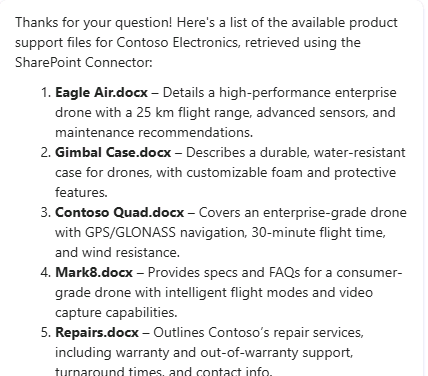
커넥터 도구가 에이전트 안에서 정상 동작함을 확인하고 이 실습을 마쳤습니다.